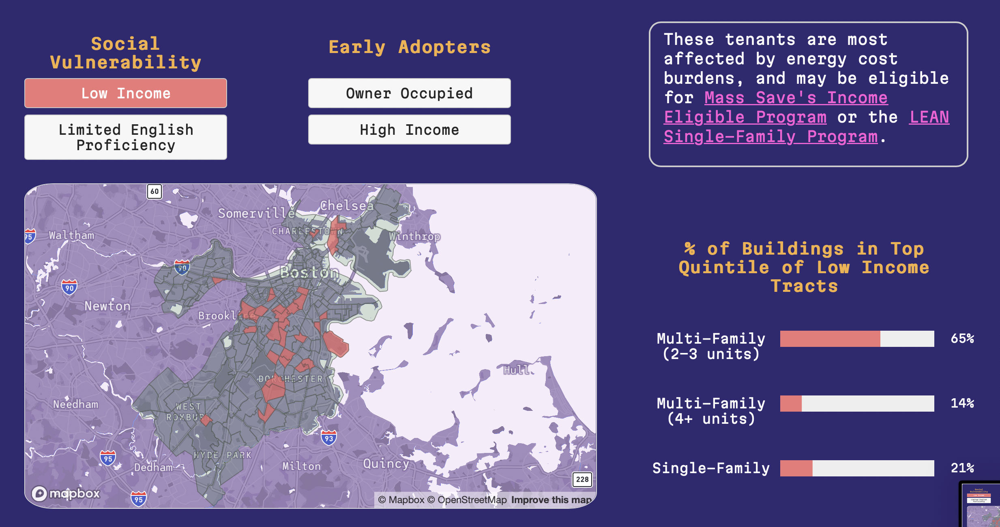
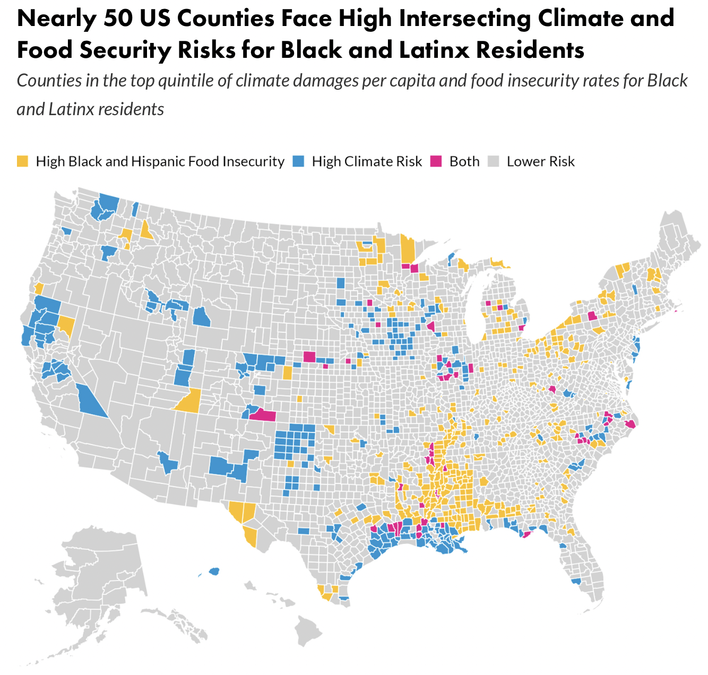
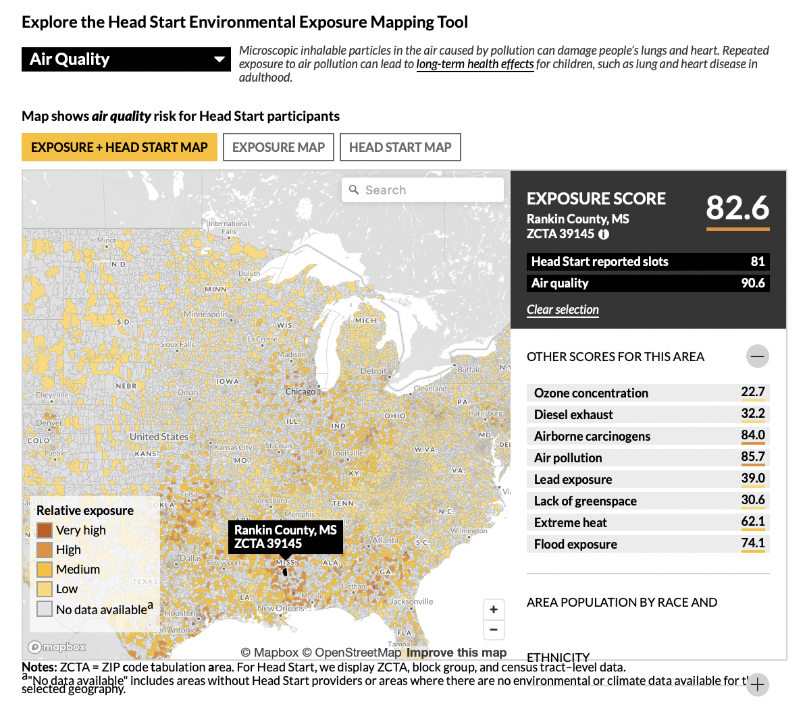
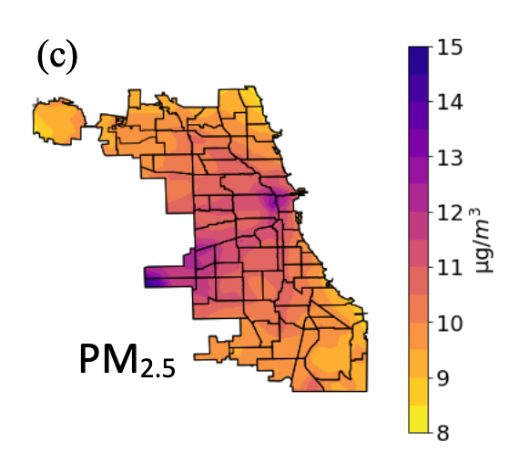
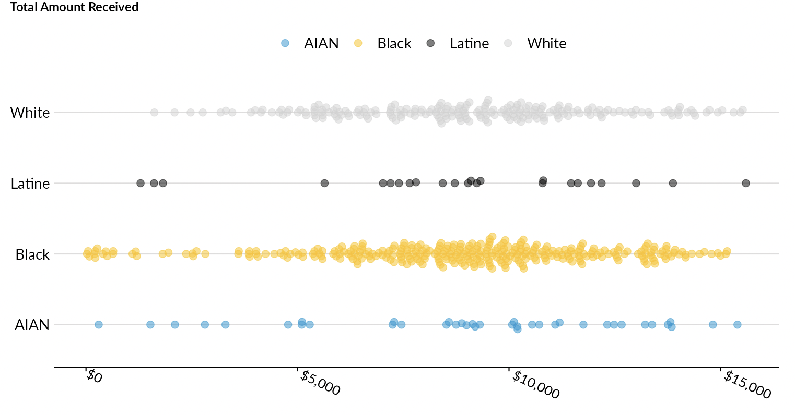

Where should Boston focus its efforts to equitably retrofit its housing supply?
Understanding the Intersection of Climate Risk, Food System Resilience, and Racial Equity: A County-Level Data Tool
Where Are Children in Head Start Exposed to Environmental Hazards?
Air Quality Impacts of Electrifying Chicago's Buses
North Carolina Back at Home Evaluation Evanston Police Arrests
Evanston Police Arrests